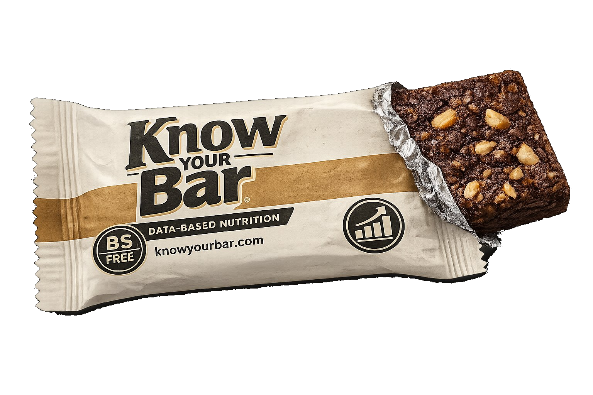

| Bar | PROT | FAT | FIBR | SGR | GRADE | CMP |
|---|
Search, filter, and compare 1,000+ protein bars by macros, ingredients, and dietary needs. Built from a hand-researched database. No BS.

| Bar | PROT | FAT | FIBR | SGR | GRADE | CMP |
|---|
There is no single healthiest protein bar because it depends on your goals. Based on ingredient quality scoring across 900+ bars, top-scoring options include RXBAR, Perfect Bar, IQ Bar, Atlas, and Munk Pack. For pure ingredient quality with no artificial sweeteners or sugar alcohols, filter to Grade A bars using the tool above.
About 35% of the 900+ bars in our database contain no artificial sweeteners. Brands that consistently avoid them include RXBAR, Perfect Bar, Larabar, GoMacro, IQ Bar, Simply Protein, and Munk Pack. Use the Clean preset filter to see all qualifying bars instantly.
Use the macro sliders to set your minimum protein, maximum calories, maximum sugar, and minimum fiber. You can combine any number of filters and see results update instantly. The tool covers 900+ bars with full macro data from the packaging.
Each bar receives an ingredient quality grade from A (Clean) to F (Avoid) based on a score calculated from its ingredient list. Ingredients are mapped to quality scores from +4 (excellent) to -4 (harmful) and weighted by their position in the list. Earlier ingredients are present in larger quantities and contribute more to the score. See the full methodology on our ingredient scoring page.
Sugar alcohols like erythritol and maltitol are generally recognized as safe but can cause digestive discomfort, bloating, and a laxative effect in some people, particularly in larger amounts. Maltitol has a notably higher glycemic impact than other sugar alcohols. Our scoring system treats sugar alcohols as a concern, with severity depending on how prominently they appear in the ingredient list.